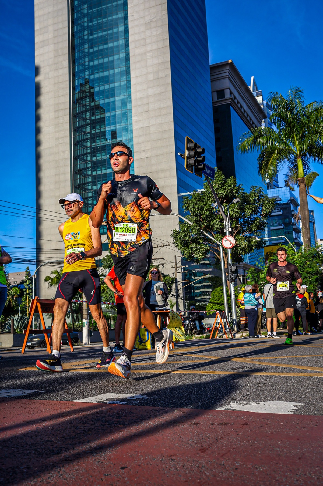
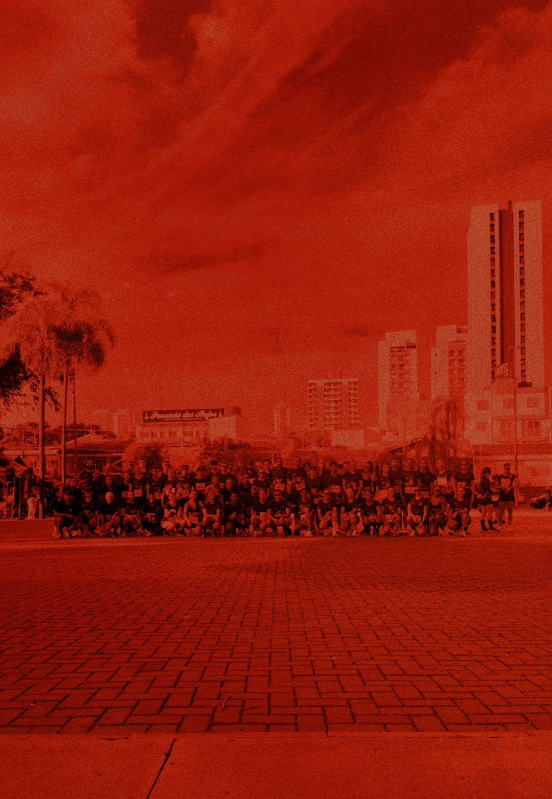
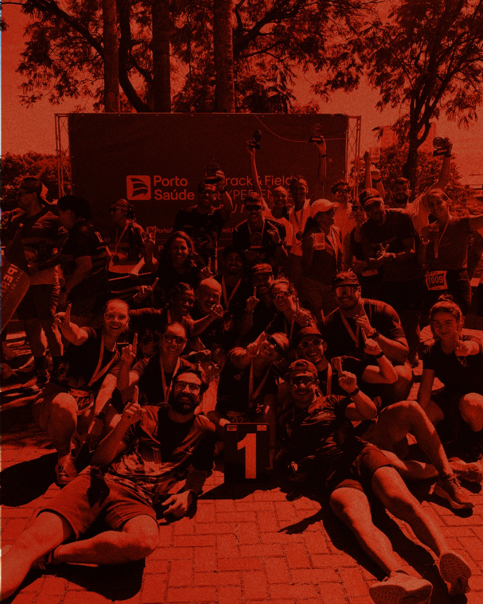
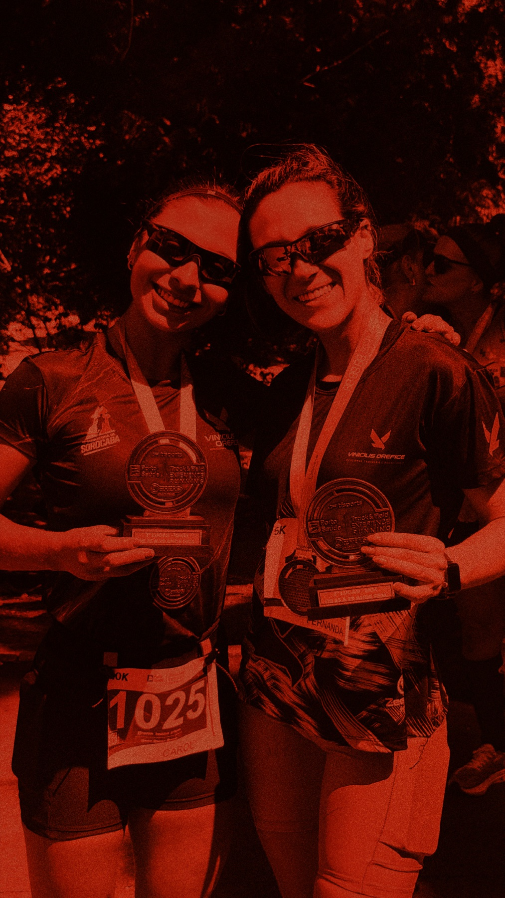
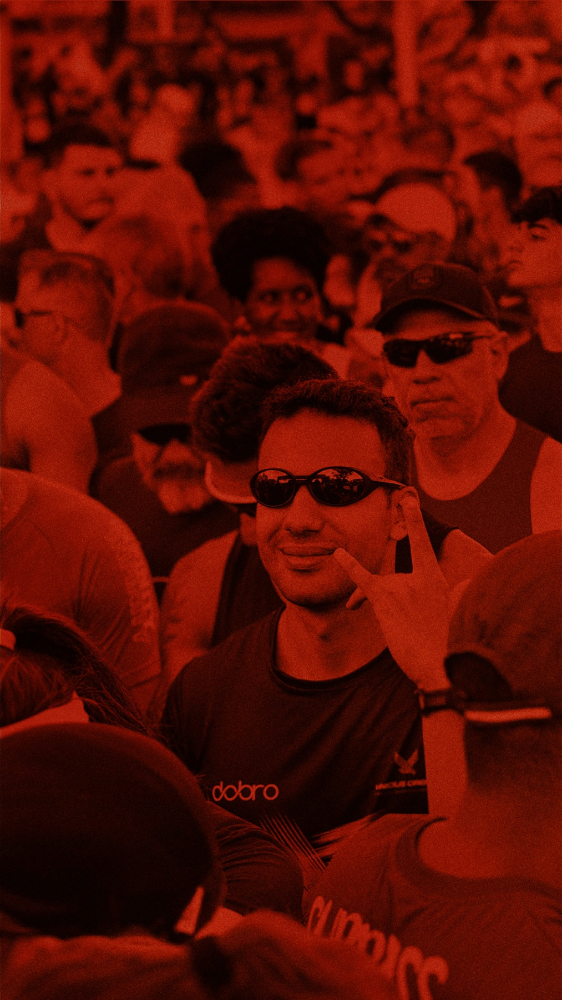
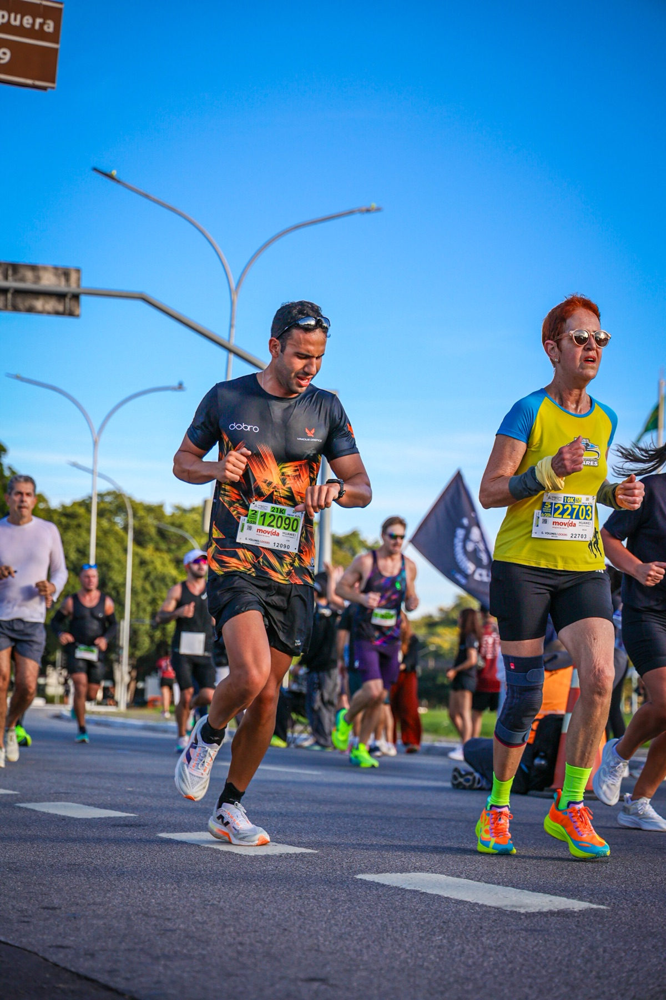
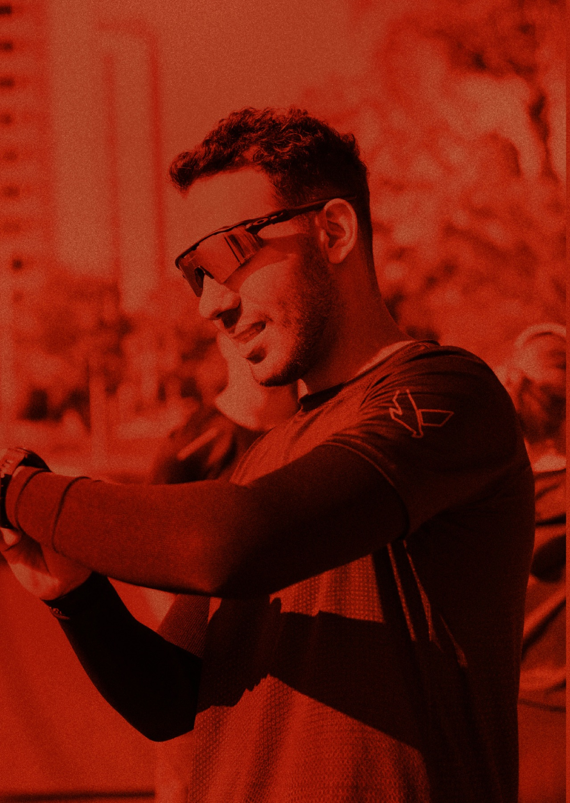

Assessoria esportiva de endurance
Treino é disciplina.
Prova é recompensa.
Você só pensa em correr. A gente cuida do resto. Planilha individual, treino em grupo e a equipe ao seu lado no dia da prova.

A linha mandaO método
Não é só planilha.
Não é só grupo.
Método com comunidade. O atleta não fica sozinho em nenhuma etapa. Do primeiro treino à linha de largada, cada passo tem dono, número e data.
Anamnese
A gente escuta antes de prescrever. Histórico, rotina, objetivo e o que já deu certo e o que já deu errado.
Avaliação
Teste e leitura do ponto de partida. Sem chute: o pace de treino nasce de número medido, não de palpite.
Planejamento
Planilha individual no TrainingPeaks, com treino presencial em grupo, fortalecimento e prova no calendário.
Feedback
Treino feito vira conversa. O que saiu, o que travou e o que muda na semana seguinte.
Reavaliação
Volta ao teste. O número novo manda no próximo ciclo. Constância vence talento.
Treinos presenciais
Grupo em Bauru.
Local que muda.

Treino presencial em grupo em Bauru, com o Vini na pista. O lugar muda de semana em semana: Alphaville, trilha do IPMet, pista da Unesp. A equipe publica o encontro antes, com hora e mapa.
- Planilha individual no TrainingPeaks
- Fortalecimento para correr mais e machucar menos
- Avaliação e reavaliação com número de verdade
- Do 5K inicial ao maratonista sub 3h
Provas e Casa do Atleta
A gente aparece
no dia da prova.
Suporte em prova e Casa do Atleta: ponto da equipe, aquecimento junto e quem grita seu nome no km final. A recompensa é sua. O caminho, a gente faz junto.



Quem comanda
Mais do que formar
corredores.
José Vinícius Orefice, o Vini, é profissional de Educação Física pela UNESP, pós-graduado em Treinamento Personalizado pela USP e em Treinamento de Endurance. Mais de 280 alunos ativos em junho de 2026.
- Educação Física · UNESP
- Pós em Treinamento Personalizado · USP
- Pós em Treinamento de Endurance
- Atende do iniciante no 5K ao maratonista sub 3h

Para empresas
Equipe de empresa
corre junto.

Palestras e projetos para empresas, como o Bracell Runners. Corrida de rua como ferramenta de equipe: disciplina, constância e gente que aparece.
- Palestras sobre treino e constância
- Projetos de corrida para equipes
- Exemplo real: Bracell Runners
Loja
Uniforme da equipe.
Camisetas, regatas, babylook, top, cropped e moletom. Peça pelo Instagram e retire com a equipe.
Você só pensa em correr.
A gente cuida do resto.
Chama no Instagram e entra para a equipe. O próximo treino já tem hora, lugar e pace.